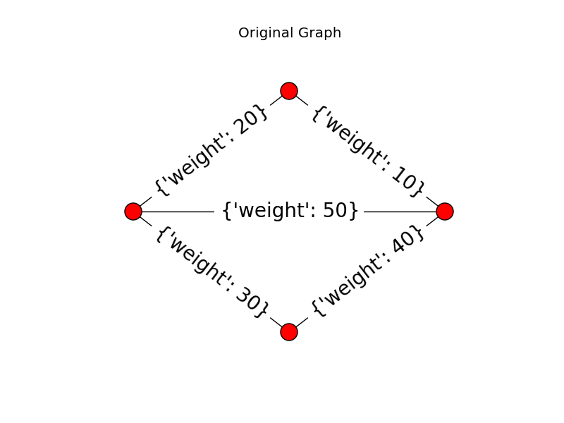
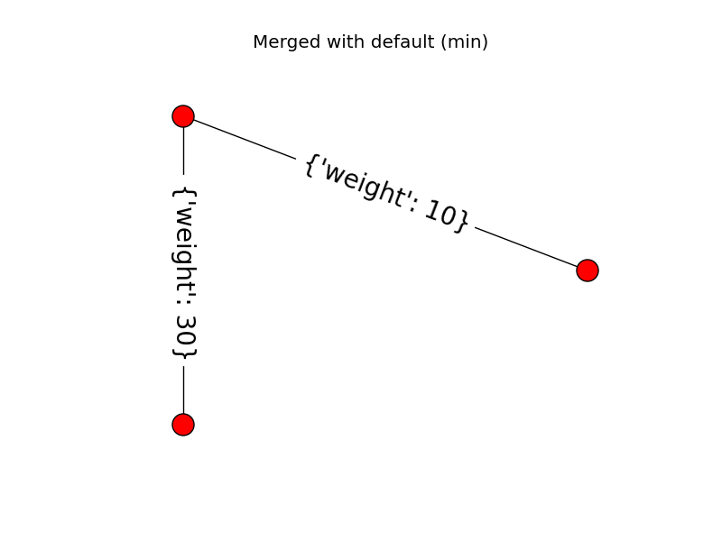
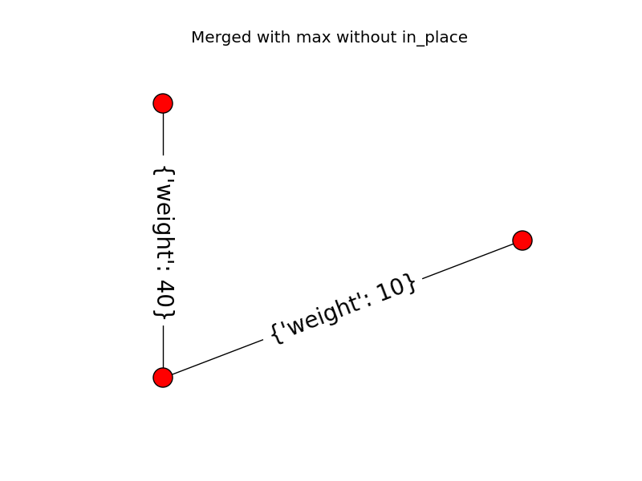

This example demonstrates the use of the merge_nodes function of a Region Adjacency Graph (RAG). The RAG class represents a undirected weighted graph which inherits from networkx.graph class. When a new node is formed by merging two nodes, the edge weight of all the edges incident on the resulting node can be updated by a user defined function weight_func.
The default behaviour is to use the smaller edge weight in case of a conflict. The example below also shows how to use a custom function to select the larger weight instead.
  from skimage.future.graph import rag
import networkx as nx
from matplotlib import pyplot as plt
import numpy as np
def max_edge(g, src, dst, n):
"""Callback to handle merging nodes by choosing maximum weight.
Returns either the weight between (`src`, `n`) or (`dst`, `n`)
in `g` or the maximum of the two when both exist.
Parameters
----------
g : RAG
The graph under consideration.
src, dst : int
The vertices in `g` to be merged.
n : int
A neighbor of `src` or `dst` or both.
Returns
-------
weight : float
The weight between (`src`, `n`) or (`dst`, `n`) in `g` or the
maximum of the two when both exist.
"""
w1 = g[n].get(src, {'weight': -np.inf})['weight']
w2 = g[n].get(dst, {'weight': -np.inf})['weight']
return max(w1, w2)
def display(g, title):
"""Displays a graph with the given title."""
pos = nx.circular_layout(g)
plt.figure()
plt.title(title)
nx.draw(g, pos)
nx.draw_networkx_edge_labels(g, pos, font_size=20)
g = rag.RAG()
g.add_edge(1, 2, weight=10)
g.add_edge(2, 3, weight=20)
g.add_edge(3, 4, weight=30)
g.add_edge(4, 1, weight=40)
g.add_edge(1, 3, weight=50)
# Assigning dummy labels.
for n in g.nodes():
g.node[n]['labels'] = [n]
gc = g.copy()
display(g, "Original Graph")
g.merge_nodes(1, 3)
display(g, "Merged with default (min)")
gc.merge_nodes(1, 3, weight_func=max_edge, in_place=False)
display(gc, "Merged with max without in_place")
plt.show()
Python source code: download (generated using skimage 0.11.3)
IPython Notebook: download (generated using skimage 0.11.3)
 Source
Source